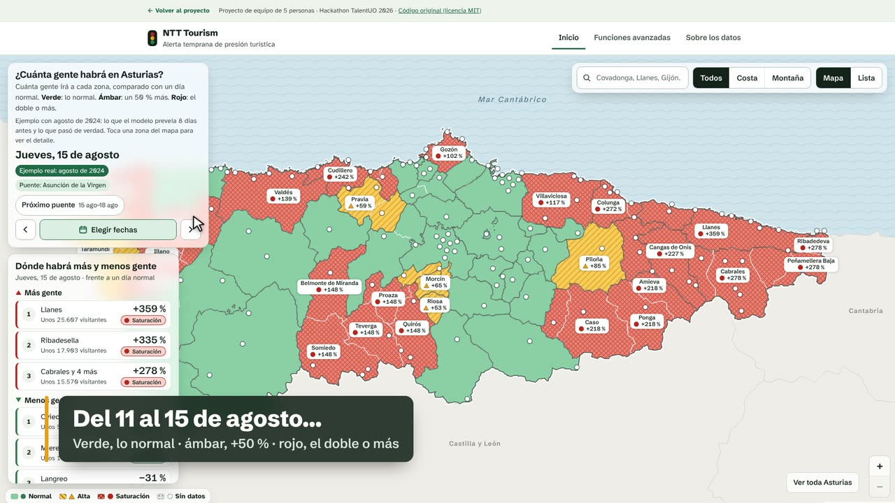

Avisar de los días de lleno en Asturias, zona a zona
Un modelo que prevé, para cada día y cada zona de Asturias, cuánta gente llegará de ocio comparado con un día normal, y una web que lo enseña como un semáforo.

- 9,7 %de error medio en la previsión a 1–7 días, frente al 12,9 % de suponer un día normal.
- +227 % / +290 %previsto 8 días antes y real en Cangas de Onís y los Lagos el 15 de agosto de 2024.
- 46 zonasque cubren los 78 concejos de Asturias, con un semáforo cada día.
Mi papel
Somos un equipo de 5. Me encargué de los datos de demanda y movilidad (MITMA, INE y SADEI), apoyé el diseño de la web y la explicación de los datos, y preparé el repositorio para hacerlo público: licencias de los datos de terceros, integración continua y documentación. Cocreé el repositorio del equipo.
Lo que todavía no hace
Aún se le escapan bastantes días de saturación. Y los datos de movilidad no se publican en tiempo real, así que la demo enseña agosto de 2024 y compara lo previsto con lo que pasó de verdad.
In English. NTT Tourism forecasts, day by day and zone by zone, how many leisure visitors will reach Asturias compared with a normal day, and shows it as a traffic light.
A team project of five people built at the TalentUO 2026 Hackathon (University of Oviedo). I worked on the demand and mobility data (MITMA, INE, SADEI).
The demo replays August 2024 with real data: 9.7 % mean error at 1–7 days, against 12.9 % for assuming a normal day.